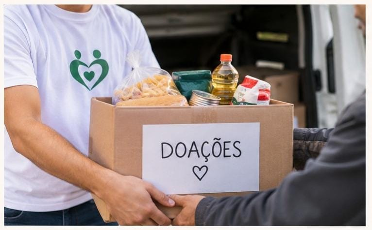
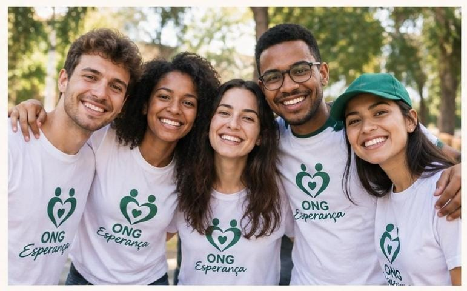

Nossos projetos
Conheça nossas iniciativas e descubra como você pode participar.
Campanhas de doação

As campanhas de doação arrecadam recursos e produtos necessários para manter nossas ações sociais.
- Doação de alimentos;
- Doação de roupas;
- Doação de produtos de higiene;
- Contribuições financeiras.
Voluntariado

Os voluntários podem colaborar diretamente com nossas ações e projetos comunitários.
- Participação em eventos;
- Organização de campanhas;
- Distribuição de doações;
- Apoio às atividades da ONG.
Como participar
Para demonstrar interesse, preencha o formulário de cadastro.
Informações e avisos
Projeto ativo Novo
Sucesso!
Seu interesse em participar da ONG foi registrado.
Atenção!
Verifique as informações antes de enviar seu cadastro.
Notificação
Você está visualizando os projetos da ONG Esperança.